Statistics for HRECs workshop
16 November 2026
Queensland University of Technology
Photo by Mika Baumeister on Unsplash
Outline
Scale of bad research
Common bad designs that can be fixed
Resources
Questions welcome
Disclaimer
I am giving a surface-level summary of some statistical issues
Researchers using statistical methods should have a thorough understanding of those methods
Current problems in health and medical research
Photo by Simon Wilkes on Unsplash
Early concerns
- 1988: Bland and Altman: “Bad statistics makes bad research, bad research may lead to bad medicine, and bad medicine may cost lives.”
Early concerns
1988: Bland and Altman: “Bad statistics makes bad research, bad research may lead to bad medicine, and bad medicine may cost lives.”
1994: Doug Altman wrote about “The scandal of poor medical research” in the BMJ
2015: Doug: Wish I’d said “bad”
Research waste
- An estimated 85% of research is wasted due to:
- 50% is not published
- Over 50% has avoidable design flaws
- Over 50% is unusable or incompletely reported, or both
Lancet series on research waste
Correctable weaknesses in the design, conduct, and analysis of biomedical and public health research studies can produce misleading results and waste valuable resources. Small effects can be difficult to distinguish from bias introduced by study design and analyses. An absence of detailed written protocols and poor documentation of research is common. Information obtained might not be useful or important, and statistical precision or power is often too low or used in a misleading way. Insufficient consideration might be given to both previous and continuing studies. Arbitrary choice of analyses and an overemphasis on random extremes might affect the reported findings. Several problems relate to the research workforce, including failure to involve experienced statisticians and methodologists, failure to train clinical researchers and laboratory scientists in research methods and design, and the involvement of stakeholders with conflicts of interest. Inadequate emphasis is placed on recording of research decisions and on reproducibility of research. Finally, reward systems incentivise quantity more than quality, and novelty more than reliability.
Significance obsession
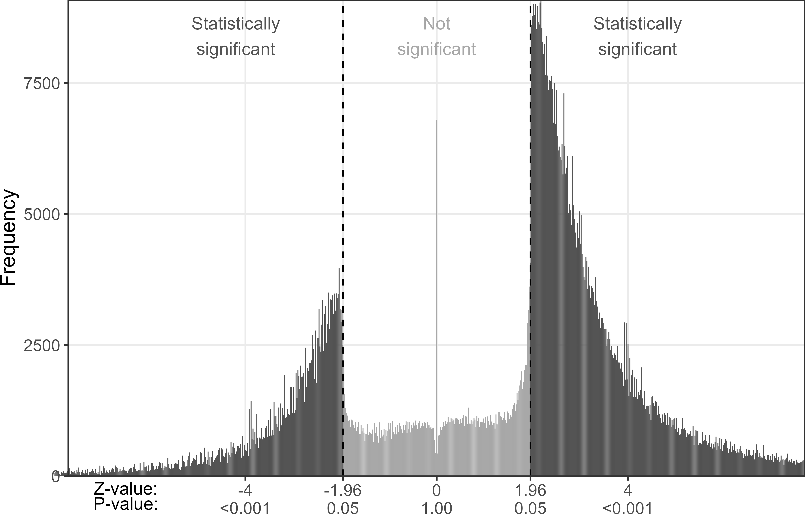
Meta-research studies
- 1,013 out of 1,659 trials were at high risk of bias. Estimated cost of bad trials was £726 million to £8 billion. DOI: 10.1186/s13063-022-06415-5
Out of 606 COVID-19 prediction models, only 7 were useful for policy. DOI: 10.1136/bmj.m1328
Only eight of 20 papers on linear regression were computationally reproducible. DOI: 10.64898/2026.04.07.26350286
Paper mining

Ethics and bad study design
- 2024 change to the Declaration of Helsinki:
- “Medical research involving human participants must have a scientifically sound and rigorous design and execution that are likely to produce reliable, valid, and valuable knowledge and avoid research waste.”
- Ethics approval is an ideal time to intervene to avoid wasted time
National statement
“Research that has merit is […] designed or developed using methods appropriate for achieving the aims of the proposal” (Section 1.1b)
“Each institution must ensure that any human research for which it is responsible is designed, reviewed, approved, authorised, conducted and monitored in accordance with the National Statement and the Code” (Section 5.1.2)
Current situation
Only 35% of Australian HRECs had a qualified statistician as full member or available for consultation (95% CI: 31% to 40%)
Many HRECs do not examine study design
“It is NOT up to the committee to design the research”
Seen as an institutional responsibility to examine study design
Perceived hierarchy of studies which do and do not require statistical review
Can AI help with study design?
The internet and literature is full of bad advice on statistics, so models may regurgitate these errors
AI models provide pleasing answers and have dichotomania. DOIs: 10.1017/jdm.2025.7; 10.48550/arXiv.2509.08713
Can AI help with study design?
The internet and literature is full of bad advice on statistics, so models may regurgitate these errors
AI models provide pleasing answers and have dichotomania. DOIs: 10.1017/jdm.2025.7; 10.48550/arXiv.2509.08713
AI as an additional journal peer reviewer is promising
AI as an additional ethical reviewer?
Bad designs…
… that are fixable
Regression to the mean
When things are at their best they will often get worse
When things are at their worst they will often get better
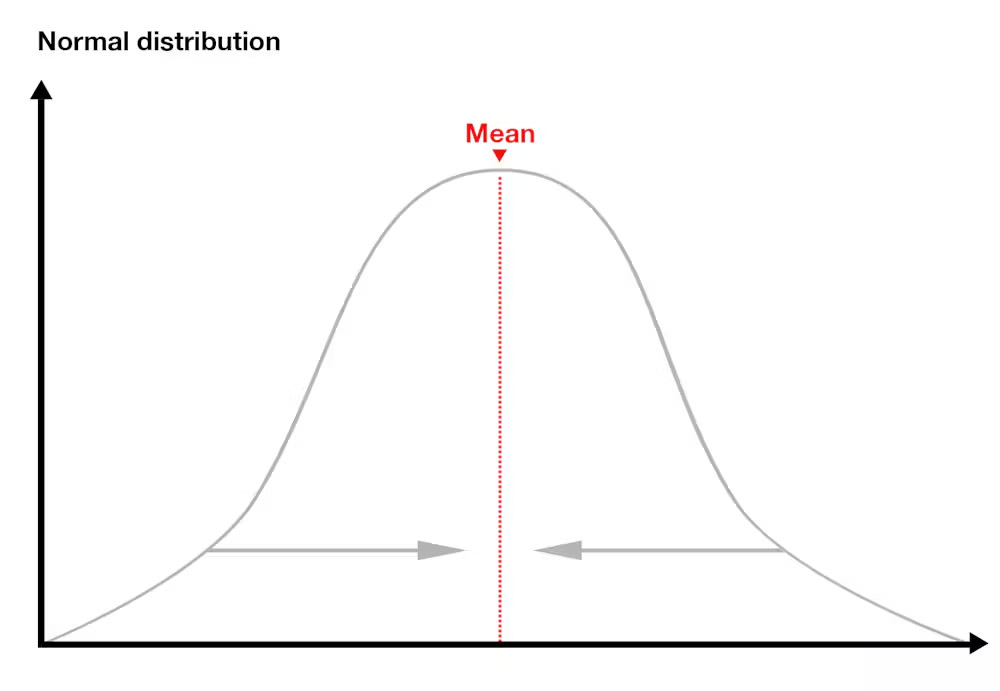
Regression to the mean
When things are at their best they will often get worse
When things are at their worst they will often get better
This happens because of random chance, not real change
A bad design can easily make random chance look like real change
Example study designs
Regression to the mean
After a period of unusually high hospital acquired infections, new hand washing policies are introduced. Infection rates are compared pre- and post-policy change.
Patients with extreme back pain are referred to a new back program. Patients are measured at baseline and six weeks follow-up.
Regression to the mean
- Happens in studies that include time
Individuals/groups/locations measured before and after some intervention
Can be monthly or weekly statistics, e.g., death counts
Only occurs if there is measurement error, also known as noise or randomness
Question: Is there any outcome in health and medicine that does not have some measurement error?
Design solutions
Regression to the mean
- Add a control group with no intervention
- Average change from baseline in the control group is then a good estimate of regression to the mean
Design solutions
Regression to the mean
- Add a control group with no intervention
- Average change from baseline in the control group is then a good estimate of regression to the mean
- Add multiple baseline measures per participant
- Reduce measurement error and hence reduce regression to the mean
Seasonal changes
Seasonal changes can look like real change
Many diseases are seasonal
(Figure shows idealised smooth seasonal pattern, real patterns will be noiser)
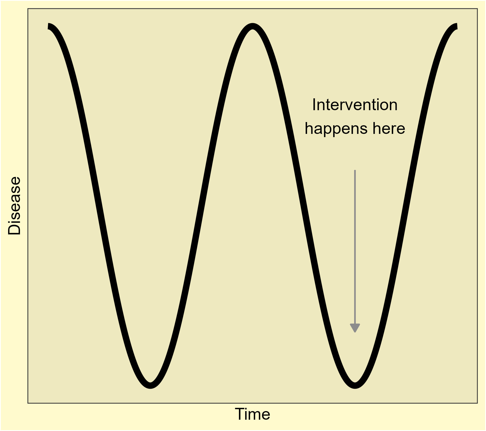
Regression to the mean
Summary
Common
Can be a large bias
Fixable
Equivalence
Studies often aim to find a difference, for example, treatment A is better than treatment B
But finding no difference does not necessarily mean the two treatments are the same
Absence of evidence is not evidence of absence
Studies aiming to claim equivalence must use a suitable study design that tests equivalence (or non-inferiority)
Equivalence studies need much larger sample sizes than difference (superiority) studies
Reductio ad absurdum
Treatment A: 1 success out of 2 patients
Treatment B: 1 success out of 2 patients
P-value for treatment difference = 1, hence there is no difference, hence the two treatments are the same!
Equivalence
Equivalance and non-inferiority studies can be extremely useful
Demonstrate that two treatments have equal efficacy, but one treatment may be cheaper and/or have less side effects
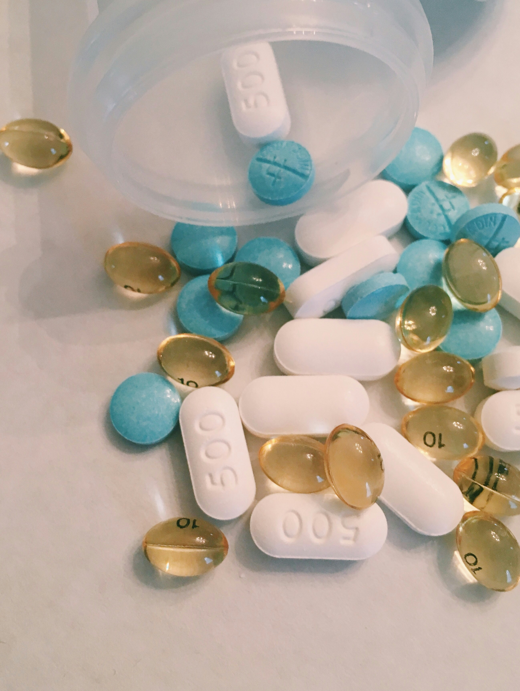
Equivalence
Study design
- Need to define what is considered equivalent
- Example: “A patient and public involvement group predefined the non-inferiority margin as one episode of urinary tract infection per person year.” DOI: 10.1136/bmj-2021-0068229
- Might consider efficacy of two drugs as equivalent if the difference is no more than 10%
Equivalence
Importance of confidence intervals
Example plot shows the mean treatment difference (dot) and 95% confidence interval (horizontal line)
Equivalance is a treatment difference within 10%
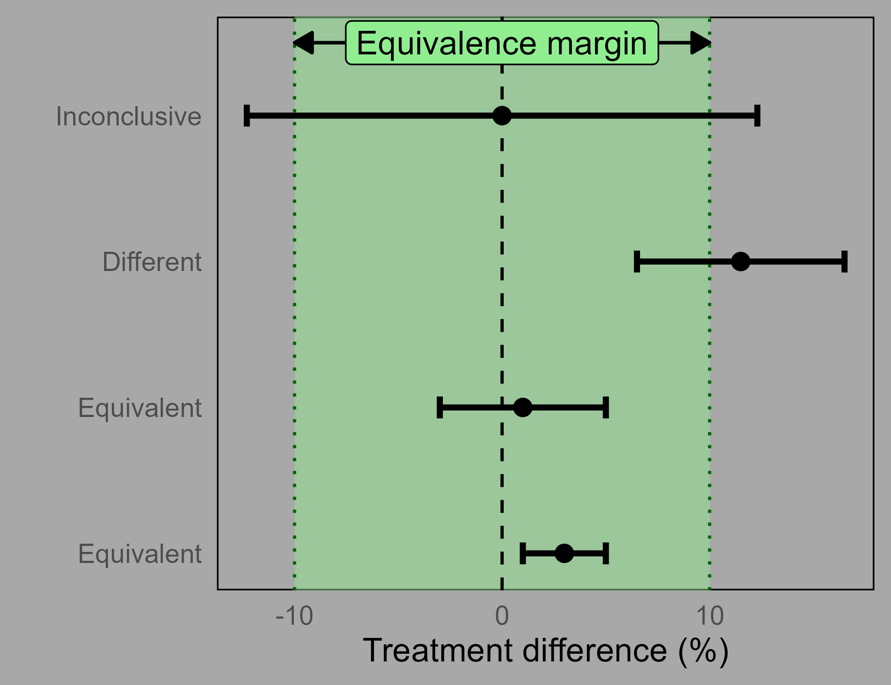
Equivalence
76% to 85% of psychology articles that discussed a non-significant finding misinterpreted non-significance as reflecting no effect. DOI: 10.1098/rsos.242167
In a sample of 498 press releases, 7% wrongly interpreted a non-significant difference as demonstrating equivalence. DOI: 10.1371/journal.pmed.1001308
Equivalence
Summary
Common
Wrongly claiming no difference can misinform policy and practice
Fixable with more planning and larger sample sizes
Dichotomania
- Categorise continuous data, e.g., continuous blood pressure categorised to low vs high
Common problem in health and medical research
“Inefficient at best and misleading and arbitrary at worst”, Frank Harrell
“The stupidity, the criminal vandalism, the wanton destruction of information involved in dichotomisation”, Stephen Senn
Also in changes, e.g., response defined as an increase from baseline of at least 10 mmHg
Dichotomania
Discarding information
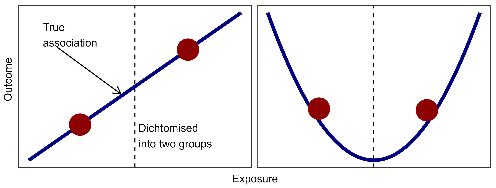
- Inefficient and potentially misleading
Dichotomania
Malnutrition example
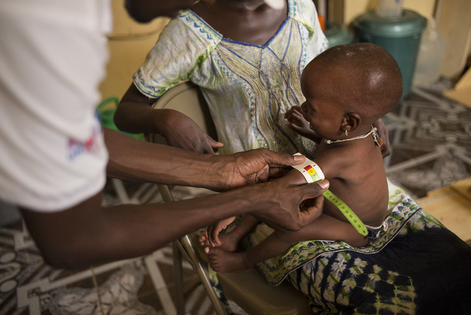
Dichotomania
Consequence: lower statistical power
“Only about 60% of the information is retained after dichotomization”
“Burdening more participants than necessary is wasteful, costly, and unethical”
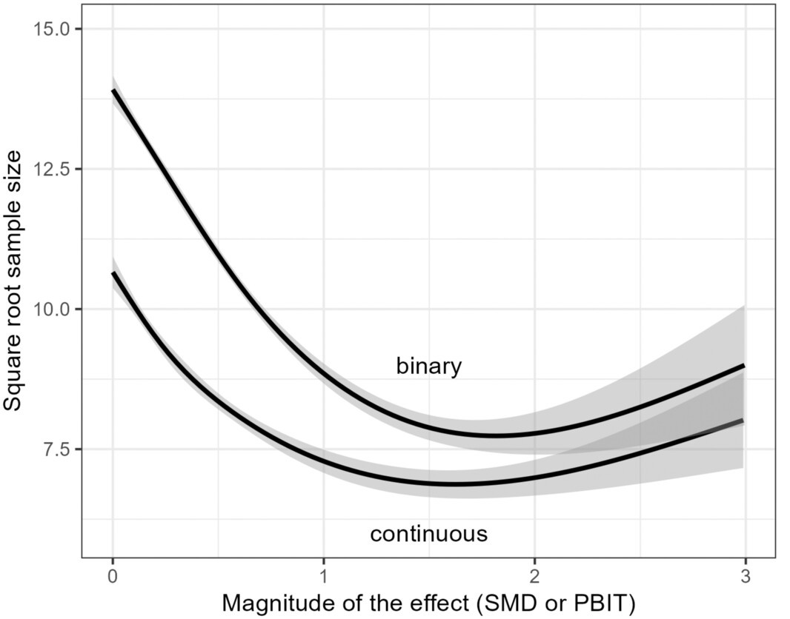
Dichotomania
Unacceptable excuses to dichotomise
This approach is standard in our field
We used a clinically meaningful cut-off
Dichotomania
Fixes
Do not discard collected information
Use statistical models for continuous outcomes, e.g.
- linear regression instead of logistic regression
- t-test instead of chi-squared
Dichotomania
Summary
Common
Reduces study’s value
Unneccesarily increases the required sample size
Fixable
Immortal time bias
- Occurs in studies that follow people over time
Study design accidentally creates a period of time when people are “immortal”
Can be difficult to spot as flawed study designs can appear intuitive
Studies involving long time periods are always more complicated
Immortal time bias
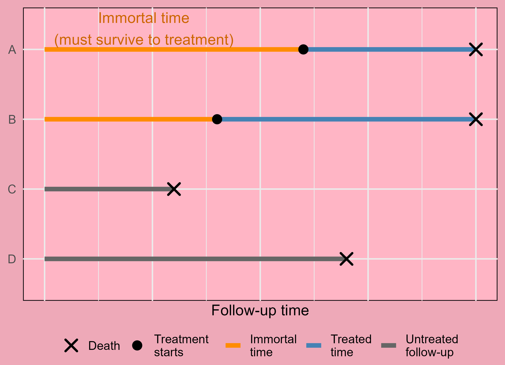
Immortal time bias
Recent example
Breast cancer patients taking glucagon-like peptide-1 receptor agonists (GLP-1 RAs) had a large reduction in mortality compared with control patients (no meds)
Patients in treatment group had to have 2+ GLP-1 RA prescriptions, creating immortal time
- Received large media attention; cancer patients asking doctors for treatment; false hope
Immortal time
- More often happens in routinely collected data, e.g., data linkage of hospital and PBS data
Dangerous to look backwards in time using observed data
Don’t see the people who were lost to follow-up
Think about a prospective study, who would have been lost to follow-up? :::
Immortal time
Fixes
Never condition on the future
Use a state-space model combined with survival analysis that allows people to move between states (advanced statistical method)
Immortal time
Fixes
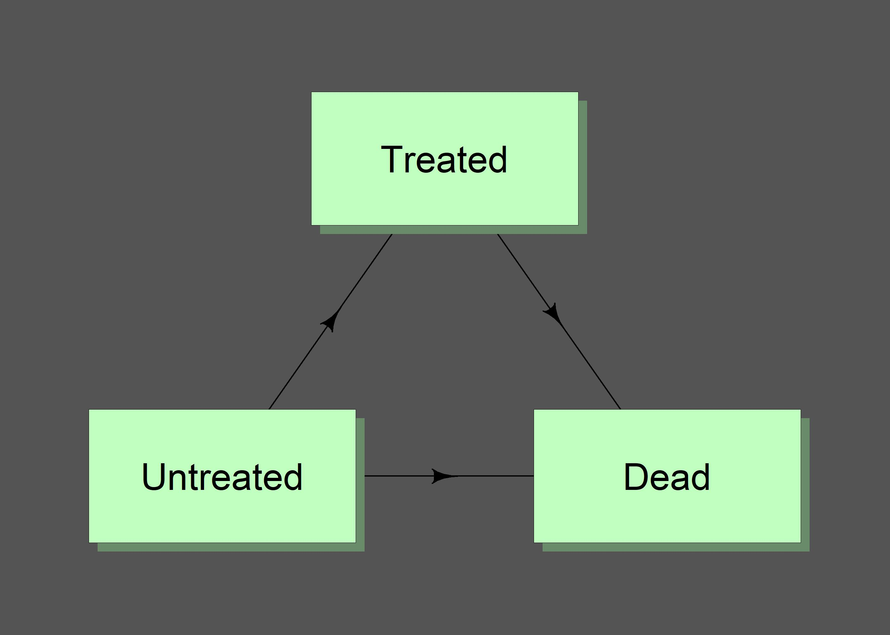
Immortal time bias
Summary
Not uncommon
Can cause a very large bias
Fixable but requires advanced methods and lots of thinking
Sample size
How many people/participants/patients do we need to answer our research question?
Key unknowns:
- Difference between groups
- Standard deviation (variance) in outcome
- Significance level (avoid type 1 errors), often 5%
- Statistical power (avoid type 2 errors), often 80%
Sample size
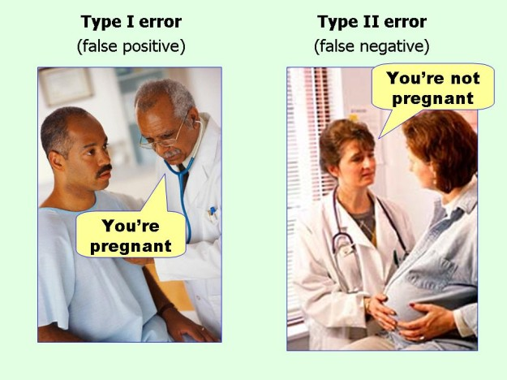
- Sample size must be:
- Sufficiently large to have reasonable chance of answering the research question
- Reduce costs of:
- Money
- Delayed decision
- Participant time
- Researcher time
Sample size
Catch-22
- Studies that are very similar to previous studies can estimate all paramaters easily
Using correlation for causation
Matching
Clustering
See Lee’s example
Count data?
Survival data => survival analysis
Table 2 fallacy
Prediction models
Blinding
Add effect size when blinding was not used.
Randomising
Trials must be registered with protocol
randomized trials should not receive ethical approval unless the trial team contains methodological and statistical expertise (Pirosca et~al., 2022)
Look for slides from one-day talk
Parametric tests?
Closing remarks
Photo by Kévin et Laurianne Langlais on Unsplash
Importance of study design
“There are only a handful of ways to do a study properly but a thousand ways to do it wrong”, David Sackett
“You cannot fix with analysis what you bungle by design”, from Planning Research on Higher Education by Light, Singer and Willett
Steer researchers towards simpler designs
Online resources
Papers/books
The Art of Statistics David Spiegelhalter
Competing risks